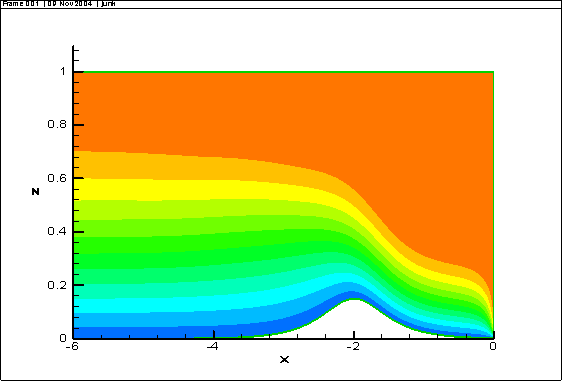
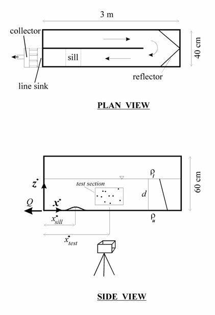
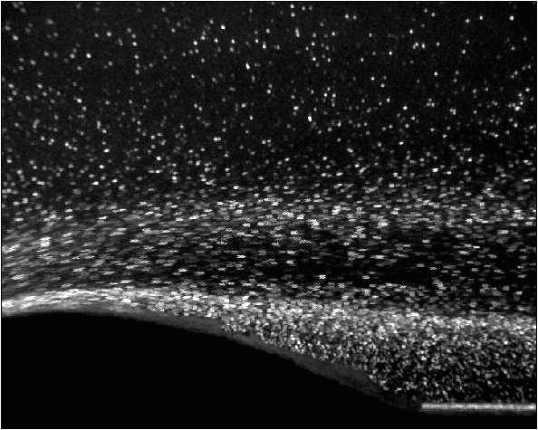
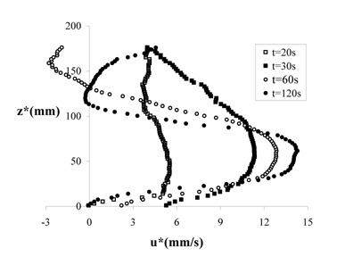

Topographic effects on selective withdrawal
Effects of a sill on selective withdrawal of a linearly stratified fluid
Topographic effects on selective withdrawal in a two-layer fluid
When water is drawn from a homogenous reservoir, all the fluid layers contribute to the outflow. However, in case of a stratified reservoir, the flow at low discharges is confined to a narrow layer adjacent to the level of the sink. This phenomenon, known as selective withdrawal, has widespread applications in lake and reservoir water quality management. Figure 1 compares the streamlines in the homogeneous and stratified flows.
Homogeneous fluid Stratified fluid
Figure 1. Streamlines in the flows of homogonous and stratified fluids towards a sink.
It's known that bottom topography and side contractions have appreciable effects on selective withdrawal in a stratified reservoir. There is a shortage of knowledge on the subject in the literature. Recently, we investigated the effects of a bottom sill on the establishment of selective withdrawal in a linearly stratified reservoir. The problem was first studied analytically (Jamali, 2003) and numerically (Shaaban and Jamali, 2003) using a linear theory. It was found that the presence of a sill modifies the velocity distribution in the withdrawal layer in the vicinity of the sill, which in turn may affect the thickness of the withdrawal layer at the steady-state. In a more recent study, the nonlinear problem of evolution of the selective withdrawal was studied numerically and experimentally (Jamali, Seymour, and Kassaian; 2005), see below. The cases of a sill in a two-layer fluid and a side contraction in linearly stratified and two-layer fluids are currently underway.
Effects of a sill on selective withdrawal of a linearly stratified fluid
The nonlinear problem of evolution of the selective withdrawal was studied numerically and experimentally by Jamali, Seymour, and Kassaian; 2005. In the theoretical part, the fully non-linear, viscous equations of motion for a reservoir with an arbitrary bottom sill were solved using a finite difference technique in curvilinear coordinates. Fig. 2 shows the results of a simulation of the flow towards a sink for a reservoir with a bottom sill at the steady-state. For an animation of the model results for establishment of the selective withdrawal, click here.
The numerical results were compared to the laboratory measurements of velocity distribution in a tank using Particle Image Velocimetry (PIV) technique. A good agreement was obtained between the theoretical and experimental results. It was found that the presence of a sill causes the withdrawal layer to be thicker and to shift upward with respect to the flat-bed case.

Figure 2. Numerical simulation of selective withdrawal of a linearly stratified fluid through a line sink at the base of a reservoir with a bottom sill.
Experiments were conducted in a Plexiglas tank 3 m long, 40 cm wide, and 60 cm high. In a typical experiment, the tank was first filled with a linearly stratified fluid using a mixture of fresh and saline water. The two-tank technique was used to achieve the desired stratification. The density typically varied from ~1010 kg/m3 at the surface to ~1030 kg/m3 at the bottom.

Figure 3. Schematic views of the experimental set-up.
Particle Image Velocimetry (PIV) technique was used to obtain the flow field at a section upstream of the sill. Figure 3 shows experimental set-up. A thin sheet of white light illuminated the test section. Pliolite VTAC-L, a granular material used in white paint, with good refractive properties and a density of approximately 1.028 g cm-3 was used as seeding material. The experiments were recorded by a Panasonic mini DV camera with a PAL standard and a resolution of 720 by 576 pixels.
To obtain the flow field at a given time, two images with a time separation of 0.04 s forming an image pair were extracted from the video clip, see Fig. 4. The pair was analyzed by MatPIV, a software developed by Johan Kristian Sveen, University of Oslo, Norway. The software is written in Matlab and uses cross-correlation algorithm to calculate the velocity field. Interrogation windows of 64 by 64 pixels were used for the image analysis, and three different filters were used to reduce the noise.

Figure 4. Superimposed successive images of the flow field for PIV analysis.
Each experiment ran for several minutes until the flow at the test section became steady. Fig. 5 shows the measured horizontal velocity profiles upstream of the sill at different instances in a typical experiment. The figure clearly illustrates the establishment of selective withdrawal. Fig. 6 shows a comparison of the experimental results with the numerical simulation for the same experiment.

Figure 5. Evolution of selective withdrawal layer upstream of the sill in a typical experiment.
.gif)
Figure 6. Horizontal velocity profiles upstream of the sill from the numerical simulation and the PIV measurements in a typical experiment.
Topographic effects on selective withdrawal in a two-layer fluid
A combination of PIV study and numerical modeling is underway to investigate the effects of sills and side contractions on selective withdrawal in a two-layer fluid. Fig. 7 shows pictures from an experiment on the flow of a two-layer fluid over a sill towards a line sink at the flume base.


Figure 7. The sequences in flow of a two-layer fluid over a sill towards a line sink at the base of the flume after the sink is suddenly opened.